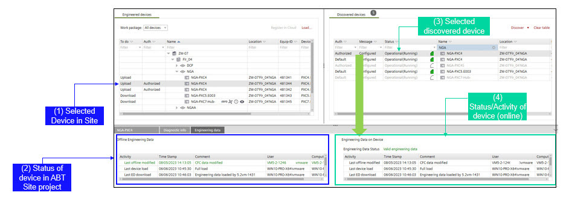
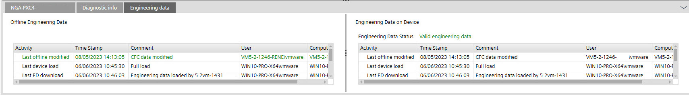
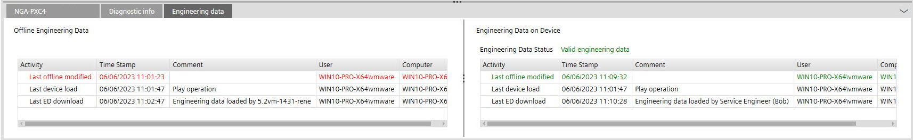
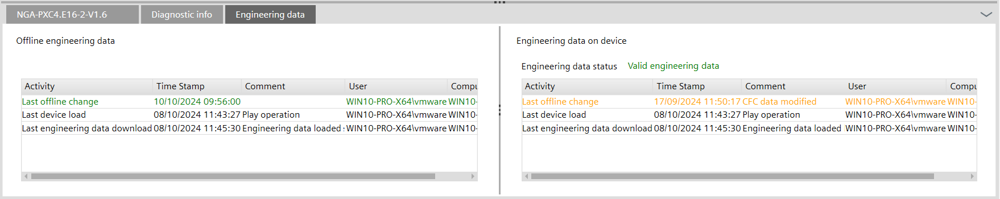

工程数据状态信息
显示所选设备的工程数据状态（Enable engineering data on device复选框已激活）。
 | |
1) 站点：在ABT站点中选择的设备（离线数据） | 3）设备：选择的设备（在线数据） |
2) Site：设备的活动，包含
| 4）设备：所选在线设备的活动，包含
|
工程数据状况 | Status/event | 下一步要执行的操作 |
|---|---|---|
无工程数据 |
| 满载 加载工程数据 |
过时的工程数据 |
| 需要加载工程数据！ （不再需要满载） Note：仍然可以上传过时的工程数据。 |
有效的工程数据 |
“绿色表示最新的工程数据”  “设备上的工程数据是最新的！推荐上传”  “橙色表示ABT站点数据较新”，推荐下载。  | 可上传工程数据 |